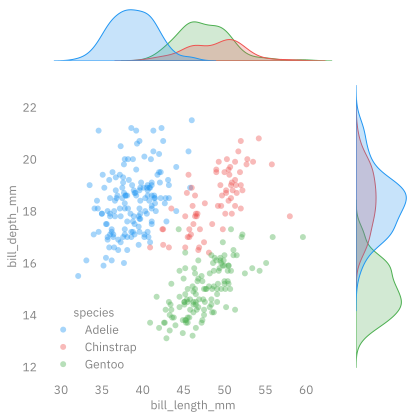
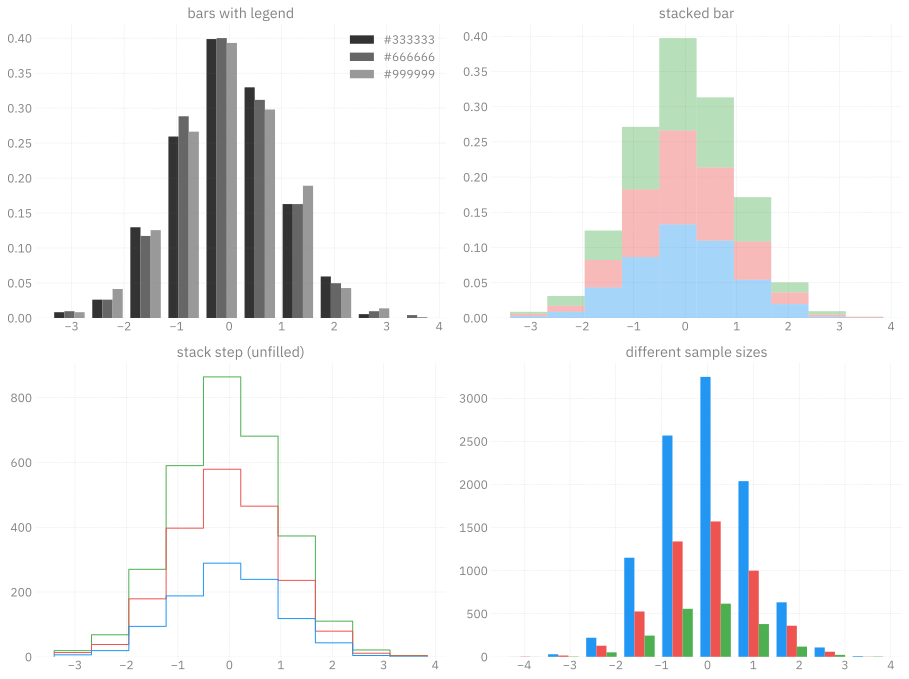

Failed to download font: IBM Plex Sans, skipping!
Failed to download font: IBM Plex Sans Condensed, skipping!
Failed to download font: IBM Plex Serif, skipping!ambivalent ü§∑ü誂Äç
opinionatedambivalent
Clean, simple style for Matplotlib figures.
Transparent backgrounds with grey text \textcolor{#838383}{\blacksquare} that are accessible / legible and {light, dark}-mode independent.
Install
Gallery1

seaborn.jointplot

tips dataset


More Examples…


l2hmc-qcd Notebook
InferenceData


l2hmc-qcd Notebook
Getting Started
Examples
seaborn Tips Dataset
code:
seaborn Scatter Plot
code:
import seaborn as sns
import matplotlib.pyplot as plt
# Load the example diamonds dataset
diamonds = sns.load_dataset("diamonds")
# Draw a scatter plot while assigning point colors and sizes to different
# variables in the dataset
f, ax = plt.subplots(figsize=(6, 6))
_ = sns.despine(f, left=True, bottom=True)
_ = clarity_ranking = ["I1", "SI2", "SI1", "VS2", "VS1", "VVS2", "VVS1", "IF"]
_ = sns.scatterplot(x="carat", y="price",
hue="clarity", size="depth",
palette="flare",
hue_order=clarity_ranking,
sizes=(1, 8), linewidth=0,
data=diamonds, ax=ax)
Histogram + Scatter Plot
code:
import numpy as np
import seaborn as sns
import matplotlib.pyplot as plt
# Simulate data from a bivariate Gaussian
n = 10000
mean = [0, 0]
cov = [(2, .4), (.4, .2)]
rng = np.random.RandomState(0)
x, y = rng.multivariate_normal(mean, cov, n).T
# Draw a combo histogram and scatterplot with density contours
f, ax = plt.subplots(figsize=(6, 6))
_ = sns.scatterplot(x=x, y=y, s=5, color="#666666", alpha=0.3)
_ = sns.histplot(x=x, y=y, bins=50, pthresh=.1, cmap="flare_r")
_ = sns.kdeplot(x=x, y=y, levels=5, color="w", linewidths=1)
_ = ax.set_xlabel('x')
_ = ax.set_ylabel('y')
_ = plt.show()
Jointplot
code:
import seaborn as sns
# Load the penguins dataset
penguins = sns.load_dataset("penguins")
# Show the joint distribution using kernel density estimation
import matplotlib as mpl
with mpl.rc_context(plt.rcParams.update({'axes.grid': False})):
g = sns.jointplot(
data=penguins,
x="bill_length_mm",
y="bill_depth_mm",
hue="species",
edgecolors='none',
alpha=0.4,
)
_ = plt.grid(False)
plt.show()Matplotlib Histograms
code:
import matplotlib.pyplot as plt
import numpy as np
n_bins = 10
x = np.random.randn(1000, 3)
plt.rcParams['axes.grid'] = True
fig, ((ax0, ax1), (ax2, ax3)) = plt.subplots(nrows=2, ncols=2)
colors = ['#333333', '#666666', '#999999']
ax0.hist(x, n_bins, density=True, histtype='bar', color=colors, label=colors)
_ = ax0.legend()
_ = ax0.set_title('bars with legend')
_ = ax1.hist(x, n_bins, density=True, histtype='bar', stacked=True, alpha=0.4)
_ = ax1.set_title('stacked bar')
_ = ax2.hist(x, n_bins, histtype='step', stacked=True, fill=False)
_ = ax2.set_title('stack step (unfilled)')
# Make a multiple-histogram of data-sets with different length.
x_multi = [np.random.randn(n) for n in [10000, 5000, 2000]]
_ = ax3.hist(x_multi, n_bins, histtype='bar')
_ = ax3.set_title('different sample sizes')
_ = fig.tight_layout()
plt.show()
üíù Status

Last Updated: 05/13/2024 @ 20:29:30
Footnotes
Examples from Matplotlib Examples↩︎
Citation
BibTeX citation:
@online{foreman2024,
author = {Foreman, Sam},
title = {Ambivalent},
date = {2024-05-13},
url = {https://saforem2.github.io/ambivalent},
langid = {en}
}
For attribution, please cite this work as:
Foreman, Sam. 2024. “Ambivalent.” May 13, 2024. https://saforem2.github.io/ambivalent.